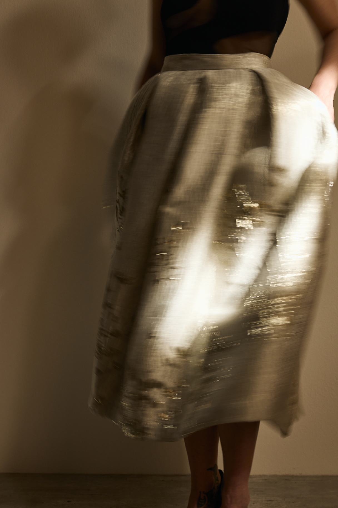

Shop CollectionAbout Me
BY ANNA MILENA stands for skirts that feel special — without being loud. I design jacquard skirts for women who dress with intention and are looking for pieces that express personality and individuality.
The idea for my label began with a very personal search. I had been invited to a wedding and wanted to wear something that felt different from a classic dress. I had a very clear vision in mind — a skirt that felt elegant, special, and modern at the same time. Finding exactly that turned out to be more difficult than expected. Eventually, I found a second-hand skirt that instantly felt right. As if it had been made for me and that very occasion.
Later, when my grandmother saw photos of my outfit, she was surprised and showed me a picture of herself wearing a very similar skirt. That moment stayed with me. It made me realize how timeless special clothing can be.
Over time, the idea of creating these kinds of skirts myself became stronger and stronger. It took courage to finally turn that thought into reality and create BY ANNA MILENA. Today, every design is inspired by the idea of making women feel special — no matter the occasion.
Because I believe you do not need a special event to wear a special piece. Whether in everyday life, in a business setting, meeting friends, or celebrating important moments — the right skirt can change the way you feel.
Every BY ANNA MILENA skirt is handcrafted in Germany, near Lake Constance, by a local seamstress. Made with care, high-quality jacquard fabrics, and the intention to create timeless pieces meant to be worn and loved for years.
BY ANNA MILENA is not about dressing up. It is about making you shine.
BY ANNA MILENA steht für Röcke, die besonders sind – ohne laut zu sein. Ich entwerfe Jacquard-Röcke für Frauen, die sich bewusst kleiden möchten und ein Kleidungsstück suchen, das Persönlichkeit ausstrahlt.
Die Idee zu meinem Label entstand aus einer ganz persönlichen Suche. Als ich zu einer Hochzeit eingeladen war, wollte ich etwas tragen, das sich anders anfühlt als ein klassisches Kleid. Ich hatte eine genaue Vorstellung von einem Rock in meinem Kopf – elegant, besonders und trotzdem modern. Doch genau dieses Stück zu finden, war schwieriger als gedacht. Schließlich entdeckte ich einen Rock second hand, der sich sofort richtig anfühlte. Als wäre er genau für mich und diesen Anlass gemacht.
Später zeigte ich meiner Oma Bilder meines Outfits. Sie reagierte überrascht und holte ein Foto von sich hervor – darauf trug sie einen ganz ähnlichen Rock. Dieser Moment hat mich berührt und mir gezeigt, wie zeitlos besondere Kleidung sein kann.
Mit der Zeit entstand immer stärker der Wunsch, selbst solche Röcke zu entwerfen. Es brauchte Mut, diesen Gedanken wirklich umzusetzen und daraus BY ANNA MILENA entstehen zu lassen. Heute entstehen meine Designs aus der Idee heraus, Frauen in jedem Moment ein besonderes Gefühl zu geben – unabhängig vom Anlass.
Denn ich finde: Man braucht keinen besonderen Tag, um ein besonderes Kleidungsstück zu tragen. Ob im Alltag, im Business, beim Treffen mit Freunden oder bei großen Feierlichkeiten – ein Rock kann Ausstrahlung verändern.
Jeder Rock von BY ANNA MILENA wird in Deutschland am Bodensee von einer Schneiderin gefertigt. Mit viel Sorgfalt, hochwertigen Jacquardstoffen und dem Anspruch, zeitlose Lieblingsstücke zu schaffen.
BY ANNA MILENA soll Frauen nicht verkleiden. Sondern sie zum Strahlen bringen.